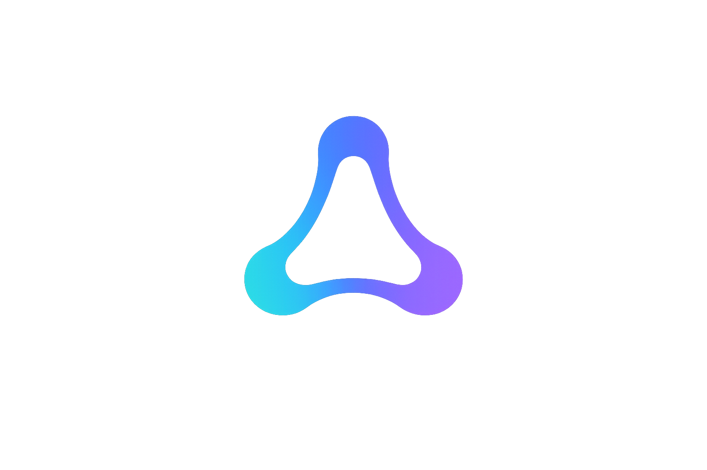

0xAgentio0xAgentio is a ZK framework for agent delegation, bounded execution and trust-minimized coordination. A principal delegates a bounded policy. The agent generates ZK proofs that a specific action is authorized under that policy. Counterparties verify the proof before doing work.
AI agents are starting to act as economic actors: they request quotes, spend budgets, call APIs, buy compute, trade assets and coordinate with other agents. Today every counterparty either blindly trusts an API key or wraps the agent in a centralized broker. Neither scales.
A principal defines a policy: allowed actions, per-action limits, cumulative limits, expiry. The agent can only generate proofs for actions inside that envelope.
Reasoning proposes. Policy validates. Noir proves. Execution adapters verify before doing work. A long-lived agent never gets one broad approval — every cycle proves itself.
Agents send proof-backed messages over Gensyn AXL. Receivers verify the proof/action/policy binding before spending API capacity, revealing data or trusting the result.
The same application shape runs locally in CI and against the live stack. Every external system sits behind a clean adapter so local stubs can be swapped for real infrastructure without changing the app code.
reason → validate → prove → execute → persist → audit
↘ (optional) ↗
AXL peer messaging
createAgentRuntime, createTrustedAgent, reasoning engines, local adapters, message helpers.
ogKvObjectClient selects nodes through the 0G indexer), file-backed and in-memory variants behind one interface.
LlmClient interface. Same reasoning code runs with mock or OpenAI-compatible providers too.
0xAgentio is intentionally multi-domain. The same delegation + coordination stack applies across compute, data marketplaces, API access, multi-agent task swarms — and finance. Each track exercises a different surface of the framework.
0G Compute Router for LLM-backed reasoning, 0G Storage (KV) for durable state and audit trails. Memory and reasoning are swappable behind one interface — the framework is built around pluggable backends, not glued to one provider.
Repo & live examplesTwo real AXL node processes exchanging Noir-proof-backed messages. Bob verifies Alice's proof/action/policy binding before doing any work. I also released a standalone TypeScript SDK for AXL — there was no official one.
SDK & live stack demo
Alice is an autonomous treasury agent. Bob is a Uniswap gateway.
Bob only calls /check_approval, /quote,
/swap or /order after verifying that
Alice's proof-backed request matches her delegated policy.
Two pieces of public infrastructure shipped alongside the framework and now serve other projects in the ecosystem.
I run a 0G KV storage node as community infrastructure. The landing page exposes the public RPC endpoint, live online status and tracked stream IDs. At least four other hackathon projects currently rely on it.
@0xagentio/axl-client is a small TypeScript client
for the AXL HTTP bridge. @0xagentio/axl-local is a
process harness that spawns and supervises real AXL node
binaries. Released as a standalone side project so any TS
project can talk to AXL — not just 0xAgentio.
The canonical local walkthrough requires no API keys, no testnet funds, no AXL binary. It shows the full proof-gated flow end-to-end.
# the canonical local walkthrough npm install npm run build npm run example:getting-started # Uniswap track demo (judge-safe, no API key required) npm run example:uniswap:judge-demo # full live stack — real Noir proving, live 0G KV, real local AXL nodes npm run example:live-stack:binary # 0G Compute Router as the reasoning engine AGENTIO_0G_COMPUTE_API_KEY="sk-..." npm run example:0g-compute-run-until-complete
/check_approval + /quote, swap and UniswapX order behind explicit live flagsUniswap is the first concrete demo because the actions are real and financially meaningful. The same shape applies anywhere agents need to prove what they're allowed to do before a counterparty acts on it.
A principal authorizes an agent to spend up to $X on GPU inference. The agent presents its budget credential to providers on the mesh; providers verify before accepting jobs.
A research agent announces a scoped procurement budget. Data providers discover it on AXL, verify the credential and offer datasets. The mesh is the marketplace.
Planner, researcher, executor, auditor — each agent's credential proves its role and scope. Agents verify each other before sharing work artifacts.
An agent consumes third-party APIs on behalf of a principal. The credential proves it's rate-limited and scoped, without issuing long-lived API keys to anonymous bots.